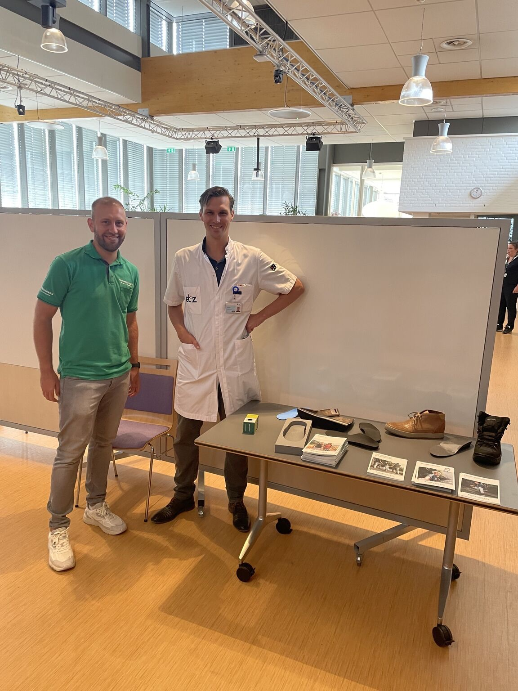

ETZ Fit
Footprint Quick Scan binnen ETZ Fit
Op 30 juni 2026 deed ik in het kader van het ETZ Fit-programma een Footprint Quick Scan voor collega's in het Elisabeth-TweeSteden Ziekenhuis, samen met Joep Lammers van Orthopedische Schoenmakers Buchrnhornen.
Joep en ik hebben deze middag als erg leuk en waardevol ervaren. De medewerkers die we spraken reageerden enthousiast en kwamen met herkenbare vragen over pijn, belasting, schoenen en wat je in de dagelijkse praktijk zelf kunt aanpassen.
Het was geen officiële diagnose en geen compleet behandeltraject. Wel een laagdrempelige manier om bij voet- en enkelklachten praktisch mee te kijken: welke factoren spelen mogelijk mee, en zijn er aanpassingen in werkbelasting, schoeisel of dagelijkse routine die kunnen helpen?
Samen met het Wetenschapsbureau van het ETZ is hier ook een kleine onderzoekscomponent aan gekoppeld. Deelnemers vulden vragenlijsten in en krijgen over een half jaar een vervolgvragenlijst. Zo kunnen we kijken of zo'n korte screening in de werkomgeving daadwerkelijk iets oplevert.
We hebben 30 medewerkers kunnen zien. Minstens evenveel collega's stonden nog op de wachtlijst, maar pasten niet meer binnen de beschikbare tijd. De klachten waren divers en verschilden in variatie niet veel van wat we op een gewone poli zien.
Voor conclusies is het te vroeg. De eerste indruk was wel dat voet- en enkelklachten bij medewerkers regelmatig langer blijven liggen dan nodig. Niet alles hoeft vervolgens in de tweede lijn te worden opgelost, en ook niet altijd via de huisarts. Goede algemene informatie en praktisch advies kunnen soms al veel betekenen.
De scan liet vooral zien dat er binnen een zorgorganisatie ruimte is voor laagdrempelige, praktische informatie over voet- en enkelklachten. De vraag blijft welke expertise daarvoor nodig is en waar die het beste georganiseerd kan worden.